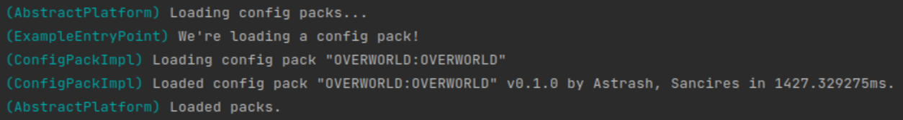

Listening for an Event¶
Listening for Events is essential for interfacing with the Terra API.
ConfigPackPreLoadEvent¶
In this tutorial, we’ll be listening for ConfigPackPreLoadEvent. As the name suggests, this event is fired before the configuration files in a config pack are loaded. Addons may listen to this event to
Register config loaders
Register config types
Register objects
For now, we’ll just log a message to the console when the event is fired.
Listening for the Event¶
To listen for the event, we’ll be using the FunctionalEventHandler API. To learn more about the Functional Event Handler, read about it here.
Injecting the Required Objects¶
To access the EventManager, which we’ll use to access the Functional Event Handler, we need a Platform instance. We’ll also need our BaseAddon instance later, so let’s inject that too:
@Inject
private Platform platform;
@Inject
private BaseAddon addon;
Note
If you need a refresher on dependency injection, you can read about it here
Creating an Event Context¶
The EventContext is used for defining a handler for an event. The event context is a builder-like object that you can use to configure properties of your handler. Let’s create an event context for ConfigPackPreLoadEvent:
platform.getEventManager()
.getHandler(FunctionalEventHandler.class)
.register(addon, ConfigPackPreLoadEvent.class)
.then(event -> {
logger.info("We're loading a config pack!");
});
If you recompile and install your addon again, you’ll see that… nothing happens.
Event Scope¶
Some events in Terra have scope. This means that they are only fired to addons that meet certain conditions. ConfigPackPreLoadEvent is one of these events.
Pack Events¶
If you look at the class hierarchy of ConfigPackPreLoadEvent, you’ll see it implements the PackEvent interface. All events that implement this interface are pack scoped. This means that their handlers are only fired if the addon that registered the handler is a dependency of the config pack.
So, how do you get your event handler to fire?
Pack Dependencies¶
In the pack manifest (pack.yml) is an addons key. These addons are dependencies of the config pack. To recieve
events fired by this pack, simply add your addon and a version range to this map. Go ahead and modify the default pack
to add your addon as a dependency:
addons:
biome-provider-pipeline: "0.1.+"
biome-provider-single: "0.1.+"
chunk-generator-noise-3d: "0.1.+"
config-biome: "0.1.+"
config-flora: "0.1.+"
config-noise-function: "0.1.+"
config-ore: "0.1.+"
config-palette: "0.1.+"
config-distributors: "0.1.+"
config-locators: "0.1.+"
config-feature: "0.1.+"
structure-terrascript-loader: "0.1.+"
structure-sponge-loader: "0.1.+"
language-yaml: "0.1.+"
generation-stage-feature: "0.1.+"
structure-function-check-noise-3d: "0.1.+"
palette-block-shortcut: "0.1.+"
example-addon: "0.1.+" # Our example addon! (Change the ID and version to match yours)
Now when you run with your addon again, you should see a message logged to the console with the pack ID when the pack loads!
Global Event Handlers¶
Another way is to mark your event handler as global. Using the EventContext#global method, you can eliminate the pack scope from your event handler. This will cause your handler to be fired regardless of whether the pack that fired it depends on your addon. Marking the handler as global would look like this:
platform.getEventManager()
.getHandler(FunctionalEventHandler.class)
.register(addon, ConfigPackPreLoadEvent.class)
.then(event -> {
logger.info("We're loading a config pack!");
})
.global();
Warning
It is generally a bad idea to mark handlers for scoped events as global! By marking a handler as global, you may introduce unexpected behavior, as it is expected that events only reach addons that are dependencies of the event source.
Conclusion¶
You now have a pack-scoped event listener in your addon, which logs when the ConfigPackPreLoadEvent is fired. Continue to learn how to register objects!
Our example addon at this stage looks like this:
package com.example.addon;
import com.dfsek.terra.addons.manifest.api.AddonInitializer;
import com.dfsek.terra.api.Platform;
import com.dfsek.terra.api.addon.BaseAddon;
import com.dfsek.terra.api.event.events.config.pack.ConfigPackPreLoadEvent;
import com.dfsek.terra.api.event.functional.FunctionalEventHandler;
import com.dfsek.terra.api.inject.annotations.Inject;
import org.slf4j.Logger;
public class ExampleEntryPoint implements AddonInitializer {
@Inject
private Logger logger;
@Inject
private Platform platform;
@Inject
private BaseAddon addon;
@Override
public void initialize() {
logger.info("Hello, World!");
platform.getEventManager()
.getHandler(FunctionalEventHandler.class)
.register(addon, ConfigPackPreLoadEvent.class)
.then(event -> {
logger.info("We're loading a config pack!");
});
}
}